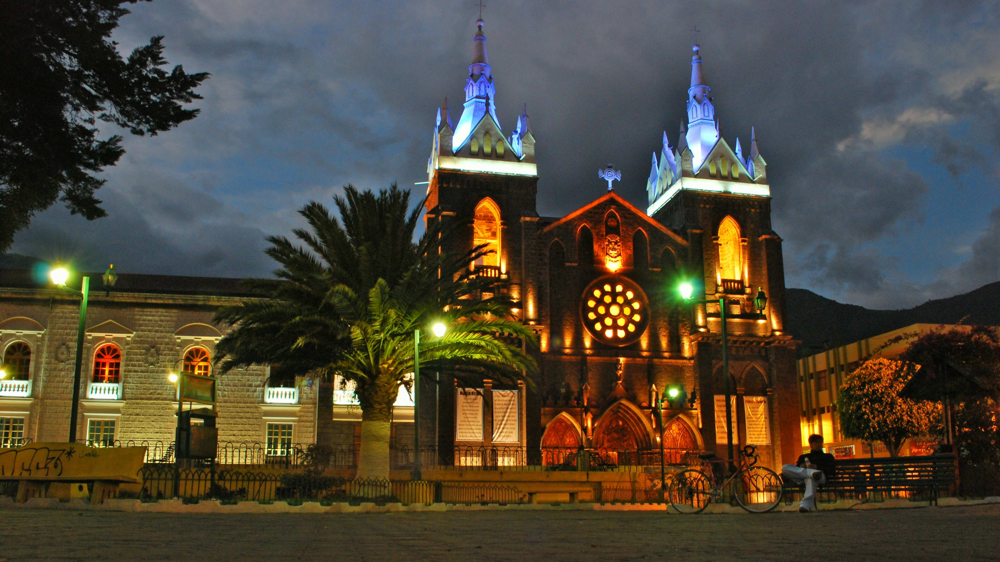

Baños de Agua Santa, conocida como la "Capital del Turismo de Aventura" y la "Puerta a la Amazonía", se erige como uno de los destinos más emblemáticos de la provincia de Tungurahua. Situada a los pies del imponente volcán Tungurahua, la ciudad es un santuario natural donde convergen la adrenalina de los deportes extremos y la serenidad de sus famosas aguas termales medicinales
"Baños de Agua Santa se ha consolidado como el destino turístico más versátil del Ecuador. Su ubicación privilegiada, en la transición entre la cordillera de los Andes y la cuenca amazónica, le otorga un microclima único y una biodiversidad excepcional. La ciudad no solo es un centro de recreación, sino también un punto de encuentro cultural donde la tradición y la modernidad convergen para recibir a visitantes de todo el mundo."
Baños de Agua Santa se consolida como el principal referente turístico de la provincia de Tungurahua. Este destino es reconocido internacionalmente por ofrecer una combinación única de recursos naturales, infraestructura moderna y una hospitalidad que caracteriza a la región interandina del Ecuador. Su ubicación estratégica, en la transición entre la Sierra y la Amazonía, le otorga un microclima privilegiado y paisajes de una belleza excepcional.
Provincia de Tungurahua, faldas del Volcán Tungurahua.
1.820 metros sobre el nivel del mar.
Temperatura promedio entre 18°C y 22°C.
Aventura, Bienestar, Religión y Naturaleza.
La localidad es catalogada como la capital de la adrenalina. Se ofrecen actividades reguladas como el canopy, rafting en el río Pastaza y el salto del puente, todas bajo estrictos estándares de seguridad.
Gracias a la actividad volcánica, la zona cuenta con fuentes termales medicinales. Los balnearios locales son visitados por turistas que buscan las propiedades curativas de sus aguas ricas en minerales.
Se invita a los usuarios a navegar por las secciones de este portal para descubrir los detalles específicos de cada atractivo turístico y planificar una visita inolvidable.